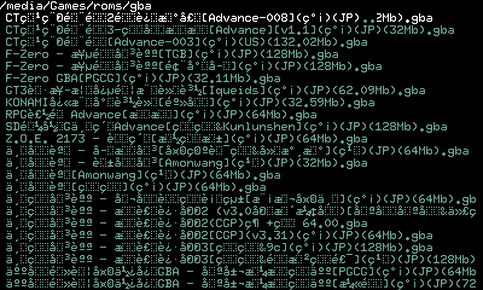
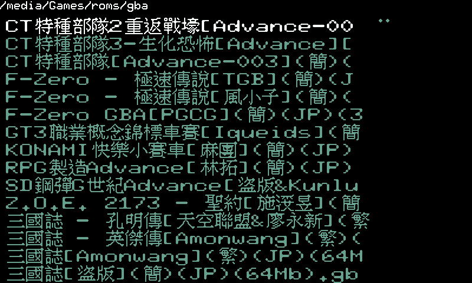

Game Boy Advance >> gpsp
支援中文檔名(倚天字型)
修改部份如下：
diff -Naur old/gui.c new/gui.c
--- old/gui.c 2020-07-02 05:31:15.249745380 -0400
+++ new/gui.c 2020-07-02 05:31:10.365821642 -0400
@@ -40,9 +40,9 @@
#else
-#define FILE_LIST_ROWS 25
+#define FILE_LIST_ROWS 16
#define FILE_LIST_POSITION 5
-#define DIR_LIST_POSITION (resolution_width * 3 / 4)
+#define DIR_LIST_POSITION 320
#endif
@@ -106,6 +106,7 @@
#define get_clock_speed_number()
#endif
+int in_dir_mode=0;
int sort_function(const void *dest_str_ptr, const void *src_str_ptr) {
char *dest_str = *((char **)dest_str_ptr);
@@ -282,22 +283,24 @@
COLOR_HELP_TEXT, COLOR_BG, 20, 220);
#else
print_string("Press X to return to the main menu.",
- COLOR_HELP_TEXT, COLOR_BG, 20, 260);
+ COLOR_HELP_TEXT, COLOR_BG, 0, 260);
#endif
+ in_dir_mode = 1;
for(i = 0, current_file_number = i + current_file_scroll_value;
i < FILE_LIST_ROWS; i++, current_file_number++) {
if(current_file_number < num_files) {
if((current_file_number == current_file_selection) &&
(current_column == 0)) {
print_string(file_list[current_file_number], COLOR_ACTIVE_ITEM,
- COLOR_BG, FILE_LIST_POSITION, ((i + 1) * 10));
+ COLOR_BG, FILE_LIST_POSITION, ((i + 1) * 15));
} else {
print_string(file_list[current_file_number], COLOR_INACTIVE_ITEM,
- COLOR_BG, FILE_LIST_POSITION, ((i + 1) * 10));
+ COLOR_BG, FILE_LIST_POSITION, ((i + 1) * 15));
}
}
}
+ in_dir_mode = 0;
for(i = 0, current_dir_number = i + current_dir_scroll_value;
i < FILE_LIST_ROWS; i++, current_dir_number++) {
diff -Naur old/pandora/Makefile new/pandora/Makefile
--- old/pandora/Makefile 2019-12-28 01:21:26.000000000 -0500
+++ new/pandora/Makefile 2020-07-02 03:44:55.708612000 -0400
@@ -25,7 +25,7 @@
# expecting to have PATH set up to get correct sdl-config first
CFLAGS += `sdl-config --cflags`
LIBS += `sdl-config --libs`
-LIBS += -ldl -lpthread -lz
+LIBS += -ldl -lpthread -lz libiconv.so.2
# Compilation:
@@ -44,7 +44,7 @@
# ----------- release -----------
-PND_MAKE ?= $(HOME)/dev/pnd/src/pandora-libraries/testdata/scripts/pnd_make.sh
+PND_MAKE ?= /usr/pandora/scripts/pnd_make.sh
rel: gpsp gpsp.sh gpsp.pxml gba_icon.png picorestore readme.txt ../game_config.txt ../COPYING.DOC
rm -rf out
diff -Naur old/pandora/pnd.c new/pandora/pnd.c
--- old/pandora/pnd.c 2020-07-02 05:31:15.349743833 -0400
+++ new/pandora/pnd.c 2020-07-02 05:31:10.469820006 -0400
@@ -17,6 +17,7 @@
* Foundation, Inc., 51 Franklin Street, Fifth Floor, Boston, MA 02110-1301 USA
*/
+#include <iconv.h>
#include "../common.h"
#include <X11/keysym.h>
#include "linux/omapfb.h" //
@@ -31,6 +32,8 @@
#include "linux/fbdev.h"
#include "linux/xenv.h"
+iconv_t cd=0;
+
enum gpsp_key {
GKEY_UP = 1 << 0,
GKEY_LEFT = 1 << 1,
@@ -94,7 +97,7 @@
static const u32 xk_to_gkey[] = {
XK_Up, XK_Left, XK_Down, XK_Right, XK_Alt_L, XK_Control_L,
XK_Shift_R, XK_Control_R, XK_Home, XK_End, XK_Page_Down, XK_Page_Up,
- XK_1, XK_2, XK_3, XK_4, XK_space,
+ XK_1, XK_2, XK_3, XK_4, XK_space
};
static const u8 gkey_to_cursor[32] = {
@@ -172,6 +175,13 @@
int ret, w, h, fd;
const char *layer_fb_name;
+ cd = iconv_open("big5", "utf-8");
+ printf("iconv_open: 0x%x\n", (int)cd);
+ if((int)cd == -1) {
+ printf("failed to open iconv !\n");
+ exit(1);
+ }
+
ret = SDL_Init(SDL_INIT_AUDIO | SDL_INIT_NOPARACHUTE);
if (ret != 0) {
fprintf(stderr, "SDL_Init failed: %s\n", SDL_GetError());
@@ -220,6 +230,7 @@
xenv_finish();
omap_setup_layer(vout_fbdev_get_fd(fb), 0, 0, 0, 0, 0);
vout_fbdev_finish(fb);
+ iconv_close(cd);
SDL_Quit();
}
@@ -229,6 +240,9 @@
int gkey = -1;
key = xenv_update(&is_down);
+ if (key == XK_q) {
+ quit();
+ }
for (i = 0; i < sizeof(xk_to_gkey) / sizeof(xk_to_gkey[0]); i++) {
if (key == xk_to_gkey[i]) {
gkey = i;
diff -Naur old/video.c new/video.c
--- old/video.c 2020-07-02 05:31:15.337744019 -0400
+++ new/video.c 2020-07-02 05:31:10.453820258 -0400
@@ -18,8 +18,14 @@
*/
#include "common.h"
+#include <iconv.h>
#define WANT_FONT_BITS
#include "font.h"
+#include "big5font.h"
+
+extern int in_dir_mode;
+extern iconv_t cd;
+extern uint8_t big5font[];
#ifdef PSP_BUILD
@@ -3860,40 +3866,122 @@
while(current_char) {
if(current_char == '\n') {
- y += FONT_HEIGHT;
+ y+= FONT_HEIGHT;
current_x = x;
dest_ptr = get_screen_pixels() + (y * pitch) + x;
} else {
- glyph_offset = _font_offset[current_char];
- current_x += FONT_WIDTH;
- glyph_offset += h_offset;
- for(i2 = h_offset, h = 0; i2 < FONT_HEIGHT && h < height; i2++, h++, glyph_offset++) {
- current_row = _font_bits[glyph_offset];
- for(i3 = 0; i3 < FONT_WIDTH; i3++) {
- if((current_row >> (15 - i3)) & 0x01)
- *dest_ptr = fg_color;
- else
- *dest_ptr = bg_color;
- dest_ptr++;
+ if(current_char > 127) {
+ char *sin;
+ char *sout;
+ size_t in_len=0;
+ size_t out_len=0;
+ char in_buf[4]= {0};
+ char out_buf[4]= {0};
+ unsigned int high, low;
+ unsigned char top[30]= {0};
+
+ i+= 3;
+ in_buf[0] = current_char;
+ in_buf[1] = str[str_index++];
+ in_buf[2] = str[str_index++];
+ sin = in_buf;
+ sout = out_buf;
+ in_len = 3;
+ out_len = sizeof(out_buf);
+ memset(out_buf, 0, out_len);
+ iconv(cd, &sin, &in_len, &sout, &out_len);
+ low = (unsigned char)out_buf[1];
+ high = 157 * (unsigned char)((unsigned char)out_buf[0] - 164);
+ if(low < 127) {
+ low-= 64;
+ } else {
+ low-= 98;
+ }
+ memcpy(top, &big5font[(high + low) * 30], 30);
+
+ int x, y, z, t, cnt=0;
+ for(y=0; y<15; y++) {
+ for(z=0; z<2; z++) {
+ t = top[cnt++];
+ for(x=0; x<8; x++) {
+ if(t & 0x80) {
+ *dest_ptr++ = fg_color;
+ } else {
+ *dest_ptr++ = bg_color;
+ }
+ t<<= 1;
+ }
+ }
+ dest_ptr+= (pitch - 16);
+ }
+ dest_ptr = (dest_ptr - (pitch * 15)) + 16;
+ current_x+= 16;
+ } else {
+ int plus=0;
+ glyph_offset = _font_offset[current_char];
+ current_x+= FONT_WIDTH;
+ if(in_dir_mode) {
+ current_x+= FONT_WIDTH;
+ }
+ glyph_offset += h_offset;
+ for(i2 = h_offset, h = 0;
+ i2 < FONT_HEIGHT;
+ i2++, h++, glyph_offset++) {
+ current_row = _font_bits[glyph_offset];
+ for(i3 = 0; i3 < FONT_WIDTH; i3++) {
+ if(current_char < 128) {
+ if((current_row >> (15 - i3)) & 0x01) {
+ *dest_ptr++ = fg_color;
+ if(in_dir_mode) {
+ *dest_ptr++ = fg_color;
+ if((i2 % 2) == 0) {
+ *(dest_ptr + pitch - 1) = fg_color;
+ *(dest_ptr + pitch - 2) = fg_color;
+ }
+ }
+ } else {
+ *dest_ptr++ = bg_color;
+ if(in_dir_mode) {
+ *dest_ptr++ = bg_color;
+ if((i2 % 2) == 0) {
+ *(dest_ptr + pitch - 1) = bg_color;
+ *(dest_ptr + pitch - 2) = bg_color;
+ }
+ }
+ }
+ }
+ }
+ dest_ptr+= (pitch - FONT_WIDTH);
+ if(in_dir_mode) {
+ dest_ptr-= FONT_WIDTH;
+ if((i2 % 2) == 0) {
+ plus+= 1;
+ dest_ptr+= pitch;
+ }
+ }
+ }
+ dest_ptr = (dest_ptr - (pitch * (h + plus))) + FONT_WIDTH;
+ if(in_dir_mode) {
+ dest_ptr+= FONT_WIDTH;
}
- dest_ptr += (pitch - FONT_WIDTH);
}
- dest_ptr = dest_ptr - (pitch * h) + FONT_WIDTH;
}
i++;
-
current_char = str[str_index];
-
if((i < pad) && (current_char == 0)) {
current_char = ' ';
} else {
str_index++;
}
- if(current_x + FONT_WIDTH > resolution_width /* EDIT */) {
- while (current_char && current_char != '\n') {
- current_char = str[str_index++];
+ if(in_dir_mode) {
+ if(current_x > 300) {
+ return;
+ }
+ } else {
+ if((current_x + FONT_WIDTH) > resolution_width) {
+ return;
}
}
}
修改前

修改後
